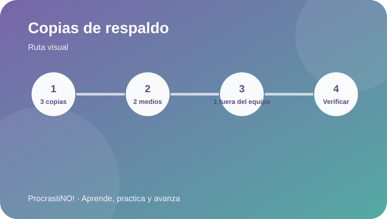
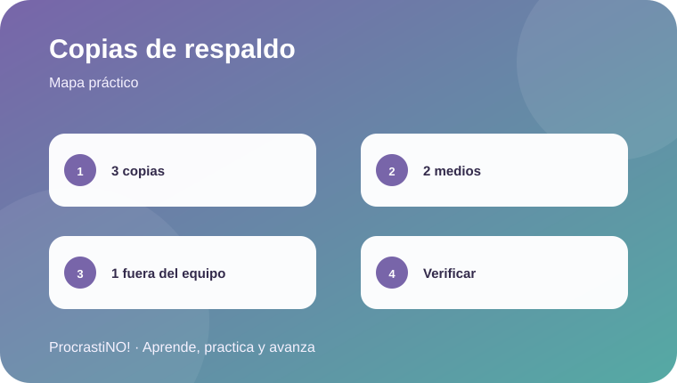

Módulo 4 · 4
Copias de seguridad 3-2-1
Protege tus trabajos con tres copias, dos tipos de medios y una copia fuera del lugar principal.


La regla 3-2-1
Una estrategia de respaldo conocida como 3-2-1 mantiene tres copias de los datos, en dos tipos de medios diferentes, con al menos una copia fuera del lugar principal.
3️⃣ Tres copias
2️⃣ Dos medios
1️⃣ Una fuera del sitio
Idea clave:
Para un trabajo importante, combina el archivo principal con otra copia local y una copia independiente o remota.
Referencias
- Cybersecurity and Infrastructure Security Agency. (n.d.). Data backup options. U.S. Department of Homeland Security. https://www.cisa.gov/sites/default/files/publications/data_backup_options.pdf